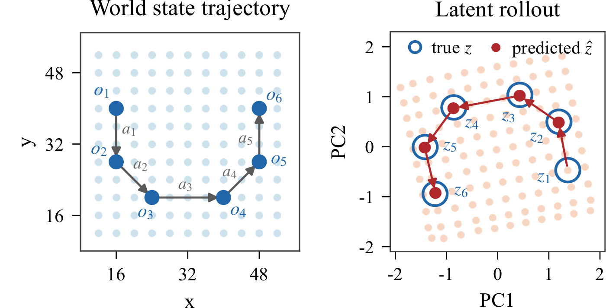
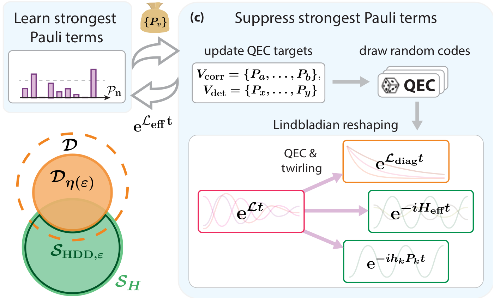
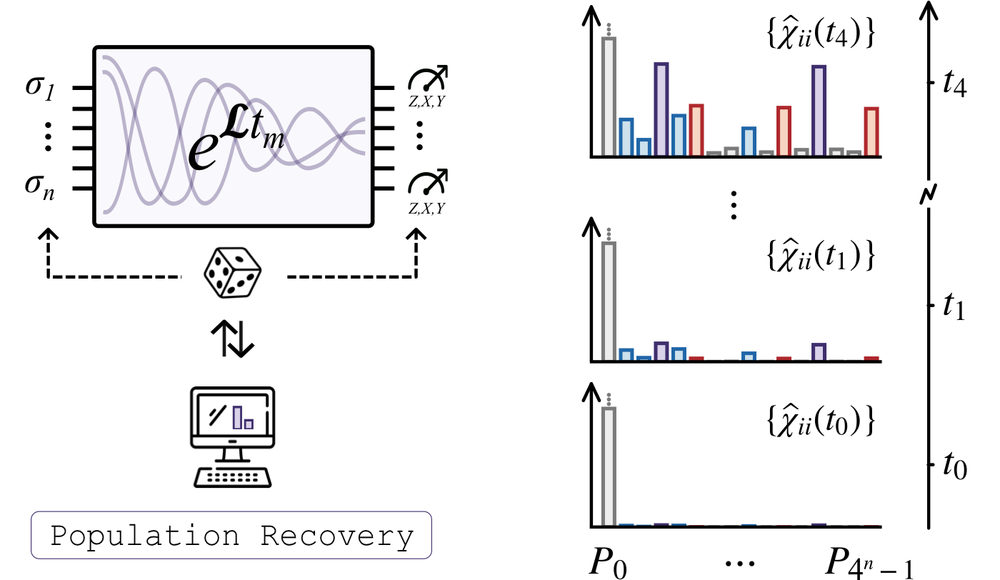
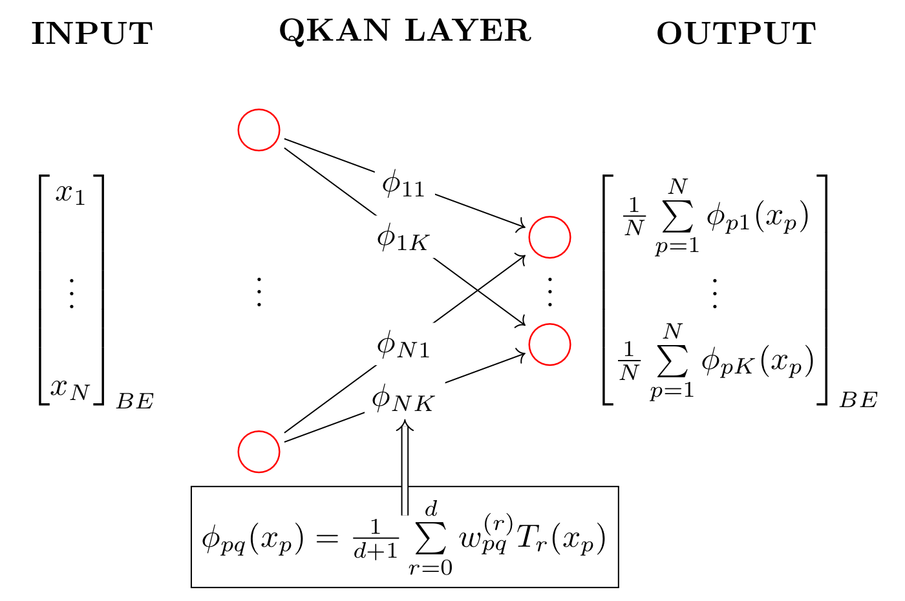
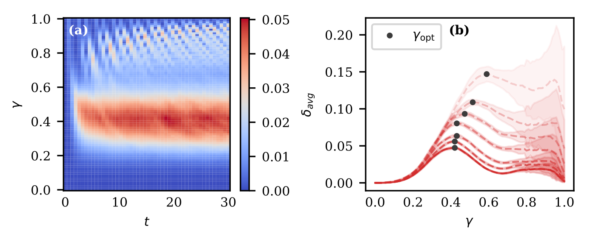
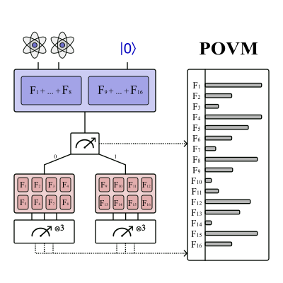

About me
I am a Research Intern at the Max Planck Institute for Intelligent Systems, supervised by Bernhard Schölkopf.
I work on JEPA-style world models.
Before moving into machine learning, I completed my MSc at ETH Zurich and BSc at TU Munich, where I focused on quantum computing, particularly quantum algorithms and quantum learning theory.
Education
-
ETH Zurich
2023 — 2026MSc Quantum Engineering
-
Technical University of Munich
2020 — 2023BSc Physics
Selected Papers
[*] equal contribution · see my Google Scholar for the full list
-

-

-

-

-

-
